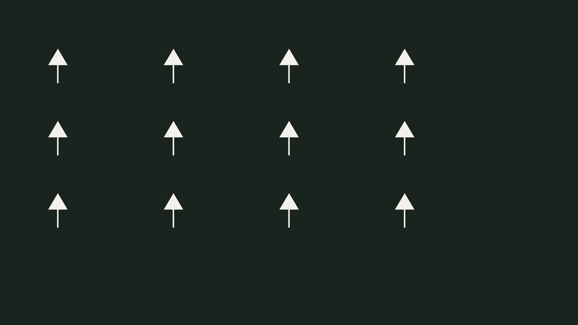
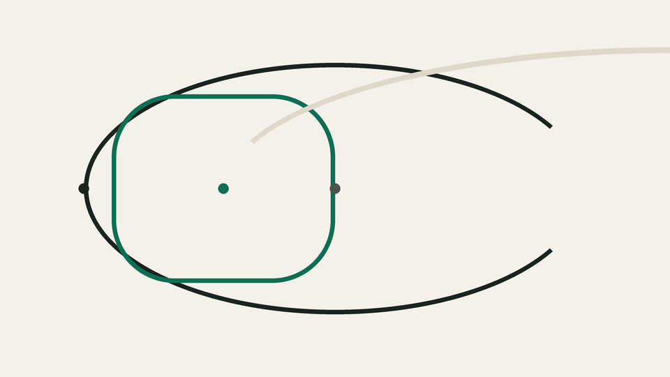

How Kestrel plans
Three passes over the forecast, then one honest route.
First, Kestrel pulls the hourly wind forecast for your whole ride window and resolves it onto every road segment, so each stretch of tarmac knows the wind it will carry.
Second, it splits your possible loop into legs and works out the true ground speed on each one: a 24 km/h rider with an 18 km/h headwind is not a 24 km/h rider, and no gradient profile will tell you that.
Third, it searches the loop both ways round and shows you the one where the long leg carries the wind home. The difference between the two is printed in minutes, before you clip in.

Three loops
Ridden this spring with the wind quality Kestrel assigned them.

The Harbour Drag
40 km, 180 m of climbing. Long straight causeway legs, so the wind quality swings hardest here: 18 km/h from the west and the loop flips from calm to a grind.
Millstone Ridge
58 km, 640 m of climbing. Hedged lanes soften the wind to a whisper; Kestrel rates it a fair-weather loop and tells you why when the gusts top 30.
The Estuary Ring
72 km, 240 m of climbing. Flat, exposed and shaped like a bent horseshoe: the ring that rewards reading the forecast before the map.
One price
€4 a month
Unlimited wind-aware routes, the full forecast archive for your region, GPX and Komoot export, and the wind math for any loop you draw yourself.
The free tier plans five routes a month, on this device, with tomorrow's forecast only.
Start freeQuestions
Where does the wind forecast come from?
From the national weather service's hourly model output, resolved to a 1 km grid and refreshed every three hours. Kestrel keeps the last two days of every forecast so you can see what the wind actually did.
Does it work for running and hiking?
It does. The wind math is the same; only your still-air speed changes, and you set that on the route page. Slower travel makes the wind matter more, not less.
What happens when the forecast is wrong?
Kestrel shows the confidence band on every leg. When the band is wide it says so on the route card and suggests the loop with the most shelter, instead of pretending to be certain.
Can I export a route to my bike computer?
Yes — GPX for every device, and a direct send for the common head units. The exported file carries the wind notes as course points, so you see them on the road.
Do I need an account to try it?
No. The first five routes are planned on this device with no sign-up. An account only syncs your routes and unlocks the archive.
Ride with the wind
Plan your first wind-aware route before the next window of fair weather closes.
Plan a route